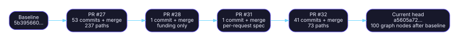

Commit map
Audit snapshot: fork
a5605a72768c6562241b248e268e33dc92787394; upstream86d86ed4396b4130922f7b9af26e3d9fc11a591b; inventory date2026-07-17.
Decision vocabulary: RETAIN = capability/ABI must survive; REFRESH = preserve capability but re-port onto current upstream; RETIRE = remove the fork patch and use upstream or archive it. S-FORK-HEAD S-UP-HEAD

Exact series boundaries
| Series | Base | Head before merge | Merge SHA | Authored commits | Changed files | Decision | Primary source |
|---|---|---|---|---|---|---|---|
| PR #27 | 5b3956605309dd3e6beed49c8f3a41423ba71d25 |
ccac6e55ec7c0fa8acdcb6e80b1a242e4f7d654e |
c2845bf86a5c1842d33bd9e990b2bcaf75779251 |
53 | 237 | MIXED | S-PR27 |
| PR #28 | c2845bf86a5c1842d33bd9e990b2bcaf75779251 |
1b49f4a004b8a2e0183c6cda7a61e7d322ac8d60 |
6bf20cd688ba0af882d1f68ba50b292edf646ab4 |
1 | 1 | RETIRE | S-PR28 |
| PR #31 | 6bf20cd688ba0af882d1f68ba50b292edf646ab4 |
b56ad79d77bc1eb9fe6407640eec8b8edfc04900 |
25c71fc6e12d73bb3804127e032d29fb8976ae40 |
1 | 2 | RETAIN | S-PR31 |
| PR #32 | 25c71fc6e12d73bb3804127e032d29fb8976ae40 |
a8b5fa906ccd13c6a8ca06d55aa287854c376868 |
a5605a72768c6562241b248e268e33dc92787394 |
41 | 73 | MIXED | S-PR32 |
The table above is the exact series-level decomposition of the 100-node range. The canonical full inner-commit lists are the PR commits views; the anchor table below identifies commits that own a distinct capability, correctness repair, or obsolete backport. S-COMPARE S-PR27-COMMITS S-PR32-COMMITS
Capability-owning commit anchors
| Series | Commit | Purpose | Subsystem | Affected paths | Decision |
|---|---|---|---|---|---|
| PR #27 | ff8e7b8cf9da |
Fix WebUI build: async/image plumbing | WebUI | tools/server/webui/src/lib/constants/uri-template.ts; tools/server/webui/src/lib/services/chat.service.ts; tools/server/webui/src/lib/stores/agentic.svelte.ts | RETIRE |
| PR #27 | 0631515b0bca |
Validate WebUI and isolate backend CI builds | Build / CI | .github/workflows/build.yml; .github/workflows/hip-quality-check.yml; tools/server/webui/** | RETIRE |
| PR #27 | df3b8a0efa4d |
Preserve negative infinity under ROCm 7.2 fast-math | ROCm/HIP kernels | ggml/src/ggml-cuda/common.cuh; cross-entropy-loss.cu; dsv4.cu; softmax.cu; topk-moe.cu | REFRESH |
| PR #27 | 62f7508b12c6 |
Restore ROCmFPX GPU coherency | ROCm/HIP + Vulkan | ggml/src/ggml-cuda/mmq.cuh; ggml/src/ggml-vulkan/ggml-vulkan.cpp; promotion evidence docs | RETAIN |
| PR #27 | b1331a2dd4ca |
Make the promotion candidate portable | TurboQuant / build integration | TurboQuant helper declarations; exhaustive type switches; converter requirements/checks | REFRESH |
| PR #27 | e6009eb76d55 |
Restore coherent WebGPU and Hexagon sources | Imported backend snapshots | ggml/src/ggml-webgpu/; ggml/src/ggml-hexagon/ | RETIRE |
| PR #27 | 80732f992f7c |
Restore coherent backend and parser snapshots | Imported upstream snapshots | ggml/src/ggml-{hexagon,opencl,webgpu}/**; common parser/chat units; related tests | RETIRE |
| PR #27 | 8fcff76bca27 |
Align chat whitespace fixtures with upstream | Parser tests | tests/test-chat*.cpp and associated parser fixtures | RETIRE |
| PR #27 | a8c41d31423e |
Harden cross-platform WebUI provisioning | Build / WebUI | .github/workflows/**; scripts/webui-download.cmake | RETIRE |
| PR #27 | 0ff0b4d03e74 |
Accept valid backend tokens across parallel slots | Sampling / server | common/sampling.cpp | REFRESH |
| PR #27 | 0e5159daa311 |
Reject Metal GET_ROWS types without kernels | Metal | ggml/src/ggml-metal/ggml-metal-device.m | RETIRE |
| PR #27 | d45ceff8d2b6 |
Route ROCmFPX OUT_PROD through CPU dequantization | CPU / ggml | ggml/src/ggml-cpu/ops.cpp | RETAIN |
| PR #27 | 01d463bb23c3 |
Restore upstream XCFramework script | Apple packaging | build-xcframework.sh | RETIRE |
| PR #27 | ccac6e55ec7c |
Clarify ROCmFPX benefits and MTP results | Documentation | README.md | REFRESH |
| PR #27 | c2845bf86a5c |
Merge PR #27 | Merge | 237-file PR series | MIXED |
| PR #28 | 1b49f4a004b8 |
Add funding link | Housekeeping | .github/FUNDING.yml | RETIRE |
| PR #28 | 6bf20cd688ba |
Merge PR #28 | Merge | .github/FUNDING.yml | RETIRE |
| PR #31 | b56ad79d77bc |
Honor per-request speculative n_max/n_min/p_min | Server / speculative | tools/server/server-context.cpp; tools/server/server-task.cpp | RETAIN |
| PR #31 | 25c71fc6e12d |
Merge PR #31 | Merge | tools/server/server-context.cpp; tools/server/server-task.cpp | RETAIN |
| PR #32 | c81c7c92233b |
Add SSD prompt cache for stateful MTP | Server / cache | common/{arg,common,speculative}.; tools/server/{server-context,server-task}.; server cache tests/docs | REFRESH |
| PR #32 | bb7d9cb5965e |
Use portable cache-file synchronization | Server / cache | tools/server/server-context.cpp | REFRESH |
| PR #32 | 630fa5a0f8fc |
Add HY3 MTP/NextN graph | Graph / model | src/models/hyv3.cpp; src/llama-model*.cpp; src/llama-context.cpp; private MTP graph hooks | RETIRE |
| PR #32 | f961404519a2 |
Support HY3 MTP tensors and split export | Conversion / GGUF | convert_hf_to_gguf.py | RETIRE |
| PR #32 | eff9987923b5 |
Harden native MTP context and effective limits | MTP / speculative | common/speculative.cpp; associated context/private API integration | REFRESH |
| PR #32 | 120227d3d34a |
Restore FP6 endpoint semantics across backends | Quantization / backends | ROCmFPX reference and shared CPU/HIP/Vulkan expansion/dispatch files | RETAIN |
| PR #32 | 7d7b06bc5e6f |
Add strict greedy verification for HY3 MTP | Server / MTP | common/speculative.*; tools/server/server-context.cpp; server options/tests | RETAIN |
| PR #32 | 2766f419526e |
Auto-select one slot for strict HY3 MTP | Server policy | tools/server/server.cpp; server startup/configuration path | REFRESH |
| PR #32 | 756121a5e8e7 |
Use UTF-8 paths for disk prompt cache | Server / Windows | tools/server/server-context.cpp; cache filesystem boundary | REFRESH |
| PR #32 | 8488bfc69f71 |
Run ROCmFP2 reference probe in CI | Build / CI | .github/workflows/check-rocmfpx.yml | RETAIN |
| PR #32 | 16ed874b3d95 |
Bound HY3 WebGPU matrix runtime | WebGPU tests | tests/test-backend-ops.cpp | RETIRE |
| PR #32 | 0d7ac512e5eb |
Make disk failure probes portable | Server tests | tools/server/tests/unit/test_prompt_cache_disk.py; tests/utils.py | RETAIN |
| PR #32 | a8b5fa906ccd |
Dispatch Q2 ROCmFPX CPU OUT_PROD | CPU / ggml | ggml/src/ggml-cpu/ops.cpp | RETAIN |
| PR #32 | d52c96a83393 |
Preserve indentation in read_file tool output | Server backport | tools/server/server-tools.cpp | RETIRE |
| PR #32 | fe2b7dc5e19a |
Validate Jinja integer base before CRT call | Jinja backport | common/jinja/value.cpp | RETIRE |
| PR #32 | a5605a72768c |
Merge PR #32; current fork head | Merge | 73-file PR series | MIXED |
Patch hygiene findings
PR #29 and PR #30 are superseded draft lines: their SSD-cache/HY3-IFP2 themes are represented in the qualified PR #32 integration. They should be closed or explicitly labeled superseded to prevent parallel maintenance. S-PR29 S-PR30 S-PR32
PR #28 changes only .github/FUNDING.yml; it belongs in repository administration, not the technical patch stack. S-PR28 S-C-FUND
Exact downloadable maps
data/pr-series.csv— exact base/head/merge/count boundaries.data/commit-map.csv— capability-owning commit anchors.patches/PR-27-promotion.md— exact 237-path list.patches/PR-28-funding.md— exact one-path list.patches/PR-31-speculative-overrides.md— exact two-path list.patches/PR-32-hy3-rocmfp2-cache.md— exact 73-path list.